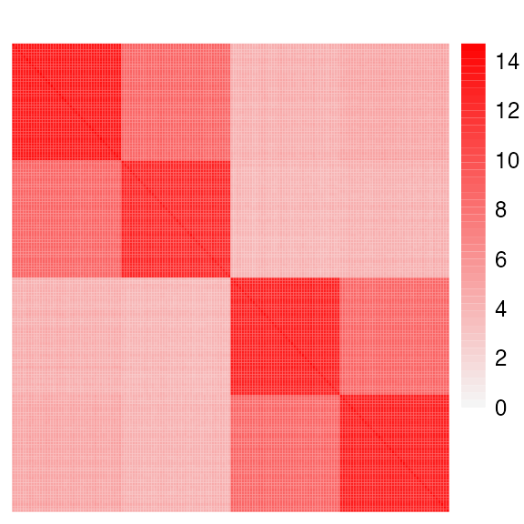
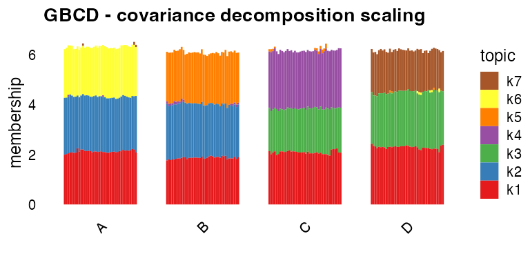
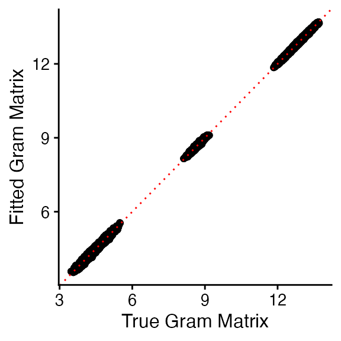
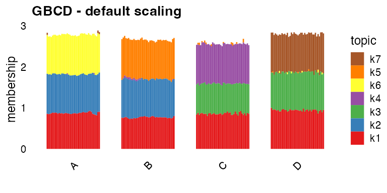
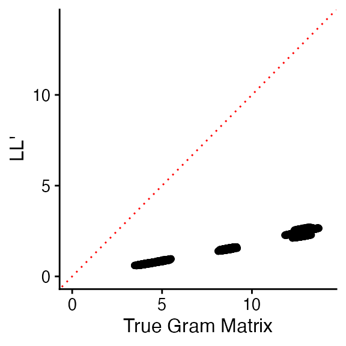

vignettes/cov_decomp_scaling.Rmd
cov_decomp_scaling.RmdThis vignette shows how to obtain a covariance decomposition using GBCD (“Generalized Binary Covariance Decomposition”).
Suppose that we have an \(N \times J\) matrix \(Y\) of expression values with entries \(y_{ij}\), where \(i = 1, \dots, N\) indexes malignant cells and \(j = 1, \dots, J\) indexes genes. In the vignette “Dissecting tumor transcriptional heterogeneity from multi-tumor single-cell RNA-seq data using GBCD”, we show how to obtain a decomposition of the expression data matrix \(Y\) into matrices \(L\) and \(F\) such that \[ y_{ij} \approx \sum_{k=1}^{K} l_{ik} f_{jk}. \] For more information on interpreting \(l_{ik}\) and \(f_{jk}\), please refer to that vignette.
In this vignette, we show how to obtain a decomposition of the scaled Gram matrix, \(S = \frac{1}{J} YY'\) into matrix \(L\) and diagonal matrix \(D\) such that \[ s_{ij} \approx \sum_{k=1}^{K}d_{kk}^2 l_{ik} l_{jk}. \]
We refer to the above decomposition as a covariance decomposition because the scaled Gram matrix is the covariance matrix when the columns of \(Y\) are centered. The elements \(l_{ik} \geq 0\) each represent the membership of cell \(i\) in GEP \(k\). This decomposition allows us to capture differences between cells in a single matrix \(L\).
First, we load the needed R packages. We also set a seed so that our results are reproducible.
In this analysis, we will work with a toy dataset. We will generate a \(n \times p\) data matrix \(Y\) as follows: \[ Y = LF' + E \] where
\(L\) is a \(n \times 7\) tree-structured matrix
\(F\) is a \(p \times 7\) matrix with \(F_{jk} \overset{i.i.d.}{\sim} N(0, 2)\)
\(E\) is a \(n \times p\) error matrix with \(E_{ij} \overset{i.i.d.}{\sim} N(0, 1)\).
This is the code to generate the data. This code was adapted from code written by Jason Willwerscheid for Willwerscheid 2021:
sim_4pops <- function(args) {
set.seed(args$seed)
n <- sum(args$pop_sizes)
p <- args$n_genes
FF <- matrix(rnorm(7 * p, sd = rep(args$branch_sds, each = p)), ncol = 7)
LL <- matrix(0, nrow = n, ncol = 7)
LL[, 1] <- 1
LL[, 2] <- rep(c(1, 1, 0, 0), times = args$pop_sizes)
LL[, 3] <- rep(c(0, 0, 1, 1), times = args$pop_sizes)
LL[, 4] <- rep(c(1, 0, 0, 0), times = args$pop_sizes)
LL[, 5] <- rep(c(0, 1, 0, 0), times = args$pop_sizes)
LL[, 6] <- rep(c(0, 0, 1, 0), times = args$pop_sizes)
LL[, 7] <- rep(c(0, 0, 0, 1), times = args$pop_sizes)
E <- matrix(rnorm(n * p, sd = args$indiv_sd), nrow = n)
Y <- LL %*% t(FF) + E
YYt <- (1/p)*tcrossprod(Y)
return(list(Y = Y, YYt = YYt, LL = LL, FF = FF, K = ncol(LL)))
}
sim_args = list(pop_sizes = rep(40, 4), n_genes = 1000,
branch_sds = c(2,2,2,2,2,2,2),
indiv_sd = 1, seed = 1)
sim_data <- sim_4pops(sim_args)This is a heatmap of the scaled Gram matrix, \(\frac{1}{p}YY'\):
cols <- colorRampPalette(c("gray96", "red"))(50)
brks <- seq(0, max(abs(sim_data$YYt)), length.out = 50)
pheatmap(sim_data$YYt, cluster_rows = FALSE,
cluster_cols = FALSE, show_rownames = FALSE, show_colnames = FALSE,
angle_col = 45, fontsize = 9, color = cols, breaks = brks,
border_color = NA,main = "")
This is a heatmap of the true loadings matrix. Note this matrix is scaled such that each column has infinity norm equal to 1:
cols <- colorRampPalette(c("gray96", "red"))(50)
brks <- seq(0, max(abs(sim_data$LL)), length.out = 50)
pheatmap(sim_data$LL, cluster_rows = FALSE,
cluster_cols = FALSE, show_rownames = FALSE, show_colnames = FALSE,
angle_col = 45, fontsize = 9, color = cols, breaks = brks,
border_color = NA, main = "")Now, we use GBCD to obtain a covariance matrix decomposition.
To obtain a covariance decomposition, we need to make use of the
ldf_type argument.
Recall that GBCD fits \(Y \approx LF'\). Note that when the prior families for \(L\) and \(F\) are closed under scaling, the estimates of \(L\) and \(F\) are only identifiable up to a scaling. Therefore, an alternative way of framing the problem is fitting \(Y \approx LDF'\) where \(D\) is a diagonal matrix and \(L\) is scaled so that each column has infinity norm equal to 1.
The ldf_type argument determines what diagonal scaling
matrix \(D\) is used when fitting \(Y \approx LDF'\). The default setting
is ldf_type = "i", which sets \(D\) to the identity matrix, and fits \(L\) and \(F\) accordingly. An alternative setting is
ldf_type = "cov", which chooses \(D\) such that \(LD^2L' \approx \frac{1}{J}YY'\). To
get a covariance matrix decomposition, we set
ldf_type = "cov".
We apply GBCD with ldf_type = "cov":
cov_scaling_gbcd_fit <- fit_gbcd(sim_data$Y, Kmax = 7,
prior = ebnm_generalized_binary, ldf_type = "cov")## [1] "Form cell by cell covariance matrix..."
## user system elapsed
## 0.007 0.000 0.007
## [1] "Initialize GEP membership matrix L..."
## Adding factor 1 to flash object...
## Wrapping up...
## Done.
## Adding factor 2 to flash object...
## Adding factor 3 to flash object...
## Adding factor 4 to flash object...
## Adding factor 5 to flash object...
## Factor doesn't significantly increase objective and won't be added.
## Wrapping up...
## Done.
## Backfitting 4 factors (tolerance: 3.81e-04)...
## Difference between iterations is within 1.0e+04...
## Difference between iterations is within 1.0e+03...
## Difference between iterations is within 1.0e+02...
## Difference between iterations is within 1.0e+01...
## Difference between iterations is within 1.0e+00...
## Difference between iterations is within 1.0e-01...
## --Maximum number of iterations reached!
## Wrapping up...
## Done.
## Backfitting 4 factors (tolerance: 3.81e-04)...
## Difference between iterations is within 1.0e+03...
## Difference between iterations is within 1.0e+02...
## Difference between iterations is within 1.0e+01...
## Difference between iterations is within 1.0e+00...
## Difference between iterations is within 1.0e-01...
## Difference between iterations is within 1.0e-02...
## Difference between iterations is within 1.0e-03...
## Wrapping up...
## Done.
## Backfitting 4 factors (tolerance: 3.81e-04)...
## Difference between iterations is within 1.0e+00...
## Wrapping up...
## Done.
## user system elapsed
## 3.001 0.114 3.117
## [1] "Estimate GEP membership matrix L..."
## Backfitting 7 factors (tolerance: 3.81e-04)...
## Difference between iterations is within 1.0e+04...
## Difference between iterations is within 1.0e+03...
## Difference between iterations is within 1.0e+02...
## Difference between iterations is within 1.0e+01...
## Difference between iterations is within 1.0e+00...
## Difference between iterations is within 1.0e-01...
## --Maximum number of iterations reached!
## Wrapping up...
## Done.
## Backfitting 7 factors (tolerance: 3.81e-04)...
## Difference between iterations is within 1.0e+02...
## Difference between iterations is within 1.0e+01...
## Difference between iterations is within 1.0e+00...
## Difference between iterations is within 1.0e-01...
## --Maximum number of iterations reached!
## Wrapping up...
## Done.
## Backfitting 7 factors (tolerance: 3.81e-04)...
## Difference between iterations is within 1.0e-01...
## --Maximum number of iterations reached!
## Wrapping up...
## Done.
## user system elapsed
## 10.350 0.229 10.578
## [1] "Estimate GEP signature matrix F..."
## Backfitting 7 factors (tolerance: 2.38e-03)...
## Difference between iterations is within 1.0e+00...
## --Maximum number of iterations reached!
## Wrapping up...
## Done.
## user system elapsed
## 16.173 0.634 16.814A few notes on the other arguments of this fit_gbcd
call:
prior = ebnm_generalized_binary forces \(L\) to be non-negative. Note that \(D\) is non-negative by construction. So
this generates a non-negative covariance matrix decomposition.
Kmax = 7 forces the initialization step of GBCD to
fit no more than 7 factors. However, it is possible for the final GBCD
fit to have more than 7 factors (The number of factors in the GBCD fit
will be no more than 2*Kmax). It is recommended to set
Kmax to a larger value rather than a smaller one. Here, we
have set Kmax = 7 because the true loadings matrix has 7
factors.
This is a structure plot of the scaled loadings estimate, \(\tilde{L} = LD\):
pop_vec <- rep(c("A","B","C","D"), times = sim_args$pop_sizes)
L <- cov_scaling_gbcd_fit$L %*% diag(cov_scaling_gbcd_fit$D)
k <- ncol(L)
colnames(L) <- paste0("k",1:k)
p1 <- structure_plot(L,grouping = pop_vec,gap = 16,verbose = FALSE) +
labs(y = "membership",
color = "factor",
title = "GBCD - covariance decomposition scaling")## Running tsne on 40 x 7 matrix.
## Running tsne on 40 x 7 matrix.
## Running tsne on 40 x 7 matrix.
## Running tsne on 40 x 7 matrix.
p1
By computing \(LD^2L'\), we obtain an estimate for the observed scaled Gram matrix. We plot the off-diagonal entries of the fitted Gram matrix against the (true) scaled Gram matrix, and see that the entries closely match up.
Gram_est <- tcrossprod(cov_scaling_gbcd_fit$L %*% diag(cov_scaling_gbcd_fit$D))
off_diag_idx <- row(sim_data$YYt) != col(sim_data$YYt)
ggplot(data = NULL, aes(x = as.vector(sim_data$YYt[off_diag_idx]),
y = as.vector(Gram_est[off_diag_idx]))) +
geom_point() +
geom_abline(slope = 1, intercept = 0, color = "red",linetype = "dotted") +
xlab("True Gram Matrix") +
ylab("Fitted Gram Matrix") +
theme_cowplot(font_size = 12)
For comparison, we also analyze the data using the default
ldf_type = "i" setting.
i_scaling_gbcd_fit <- fit_gbcd(sim_data$Y, Kmax = 7, ebnm_generalized_binary,
ldf_type = "i")## [1] "Form cell by cell covariance matrix..."
## user system elapsed
## 0.006 0.000 0.005
## [1] "Initialize GEP membership matrix L..."
## Adding factor 1 to flash object...
## Wrapping up...
## Done.
## Adding factor 2 to flash object...
## Adding factor 3 to flash object...
## Adding factor 4 to flash object...
## Adding factor 5 to flash object...
## Factor doesn't significantly increase objective and won't be added.
## Wrapping up...
## Done.
## Backfitting 4 factors (tolerance: 3.81e-04)...
## Difference between iterations is within 1.0e+04...
## Difference between iterations is within 1.0e+03...
## Difference between iterations is within 1.0e+02...
## Difference between iterations is within 1.0e+01...
## Difference between iterations is within 1.0e+00...
## Difference between iterations is within 1.0e-01...
## --Maximum number of iterations reached!
## Wrapping up...
## Done.
## Backfitting 4 factors (tolerance: 3.81e-04)...
## Difference between iterations is within 1.0e+03...
## Difference between iterations is within 1.0e+02...
## Difference between iterations is within 1.0e+01...
## Difference between iterations is within 1.0e+00...
## Difference between iterations is within 1.0e-01...
## Difference between iterations is within 1.0e-02...
## Difference between iterations is within 1.0e-03...
## Wrapping up...
## Done.
## Backfitting 4 factors (tolerance: 3.81e-04)...
## Difference between iterations is within 1.0e+00...
## Wrapping up...
## Done.
## user system elapsed
## 3.087 0.067 3.153
## [1] "Estimate GEP membership matrix L..."
## Backfitting 7 factors (tolerance: 3.81e-04)...
## Difference between iterations is within 1.0e+04...
## Difference between iterations is within 1.0e+03...
## Difference between iterations is within 1.0e+02...
## Difference between iterations is within 1.0e+01...
## Difference between iterations is within 1.0e+00...
## Difference between iterations is within 1.0e-01...
## --Maximum number of iterations reached!
## Wrapping up...
## Done.
## Backfitting 7 factors (tolerance: 3.81e-04)...
## Difference between iterations is within 1.0e+02...
## Difference between iterations is within 1.0e+01...
## Difference between iterations is within 1.0e+00...
## Difference between iterations is within 1.0e-01...
## --Maximum number of iterations reached!
## Wrapping up...
## Done.
## Backfitting 7 factors (tolerance: 3.81e-04)...
## Difference between iterations is within 1.0e-01...
## --Maximum number of iterations reached!
## Wrapping up...
## Done.
## user system elapsed
## 10.445 0.204 10.650
## [1] "Estimate GEP signature matrix F..."
## Backfitting 7 factors (tolerance: 2.38e-03)...
## Difference between iterations is within 1.0e+00...
## --Maximum number of iterations reached!
## Wrapping up...
## Done.
## user system elapsed
## 16.354 0.465 16.972This is a structure plot of the loadings estimate, \(L\) (recall that for
ldf_type = "i", \(D\) is
set to the identity matrix):
L <- i_scaling_gbcd_fit$L
k <- ncol(L)
colnames(L) <- paste0("k",1:k)
p2 <- structure_plot(L,grouping = pop_vec,
gap = 16,verbose = FALSE) +
labs(y = "membership",
color = "factor",
title = "GBCD - default scaling")## Running tsne on 40 x 7 matrix.
## Running tsne on 40 x 7 matrix.
## Running tsne on 40 x 7 matrix.
## Running tsne on 40 x 7 matrix.
p2
With the default setting, we see that each component has a maximum loading value of 1. This can be helpful for interpreting the entries of the corresponding \(F\) matrix. However, this estimate of \(L\) (alone) cannot be used to generate an estimate for the Gram matrix, i.e \(LL' \not\approx \frac{1}{J}YY'\).
Here, we plot the off-diagonal entries of \(LL'\) against the off-diagonal entries of the observed Gram matrix. We see that the entries are not of the same scale:
LLt <- tcrossprod(i_scaling_gbcd_fit$L)
ggplot(data = NULL, aes(x = as.vector(sim_data$YYt[off_diag_idx]),
y = as.vector(LLt[off_diag_idx]))) +
geom_point() +
geom_abline(slope = 1, intercept = 0, color = "red",linetype = "dotted") +
xlab("True Gram Matrix") +
ylab("LL\'") +
xlim(0,14) +
ylim(0,14) +
theme_cowplot(font_size = 12)
This is the version of R and the packages that were used to generate these results:
## R version 4.3.3 (2024-02-29)
## Platform: aarch64-apple-darwin20 (64-bit)
## Running under: macOS 15.5
##
## Matrix products: default
## BLAS: /Library/Frameworks/R.framework/Versions/4.3-arm64/Resources/lib/libRblas.0.dylib
## LAPACK: /Library/Frameworks/R.framework/Versions/4.3-arm64/Resources/lib/libRlapack.dylib; LAPACK version 3.11.0
##
## locale:
## [1] en_US.UTF-8/en_US.UTF-8/en_US.UTF-8/C/en_US.UTF-8/en_US.UTF-8
##
## time zone: America/Chicago
## tzcode source: internal
##
## attached base packages:
## [1] stats graphics grDevices utils datasets methods base
##
## other attached packages:
## [1] fastTopics_0.7-25 ashr_2.2-66 gbcd_0.2-11 flashier_1.0.56
## [5] ebnm_1.1-34 pheatmap_1.0.12 ggrepel_0.9.6 cowplot_1.1.3
## [9] ggplot2_3.5.2 Matrix_1.6-5
##
## loaded via a namespace (and not attached):
## [1] tidyselect_1.2.1 viridisLite_0.4.2 dplyr_1.1.4
## [4] farver_2.1.2 fastmap_1.2.0 lazyeval_0.2.2
## [7] digest_0.6.37 lifecycle_1.0.4 invgamma_1.2
## [10] magrittr_2.0.3 compiler_4.3.3 rlang_1.1.6
## [13] sass_0.4.10 progress_1.2.3 tools_4.3.3
## [16] yaml_2.3.10 data.table_1.17.6 knitr_1.50
## [19] labeling_0.4.3 prettyunits_1.2.0 htmlwidgets_1.6.4
## [22] scatterplot3d_0.3-44 plyr_1.8.9 RColorBrewer_1.1-3
## [25] Rtsne_0.17 withr_3.0.2 purrr_1.0.4
## [28] desc_1.4.3 grid_4.3.3 colorspace_2.1-0
## [31] scales_1.4.0 gtools_3.9.5 dichromat_2.0-0.1
## [34] cli_3.6.5 rmarkdown_2.29 crayon_1.5.3
## [37] ragg_1.2.7 generics_0.1.4 RcppParallel_5.1.10
## [40] httr_1.4.7 reshape2_1.4.4 pbapply_1.7-2
## [43] cachem_1.1.0 stringr_1.5.1 splines_4.3.3
## [46] parallel_4.3.3 softImpute_1.4-3 vctrs_0.6.5
## [49] jsonlite_2.0.0 hms_1.1.3 mixsqp_0.3-54
## [52] irlba_2.3.5.1 horseshoe_0.2.0 systemfonts_1.0.6
## [55] trust_0.1-8 plotly_4.11.0 jquerylib_0.1.4
## [58] tidyr_1.3.1 glue_1.8.0 pkgdown_2.0.7
## [61] uwot_0.2.3 stringi_1.8.7 Polychrome_1.5.1
## [64] gtable_0.3.6 quadprog_1.5-8 tibble_3.3.0
## [67] pillar_1.11.0 htmltools_0.5.8.1 truncnorm_1.0-9
## [70] R6_2.6.1 textshaping_0.3.7 evaluate_1.0.4
## [73] lattice_0.22-5 RhpcBLASctl_0.23-42 memoise_2.0.1
## [76] SQUAREM_2021.1 bslib_0.9.0 Rcpp_1.1.0
## [79] deconvolveR_1.2-1 xfun_0.52 fs_1.6.6
## [82] pkgconfig_2.0.3